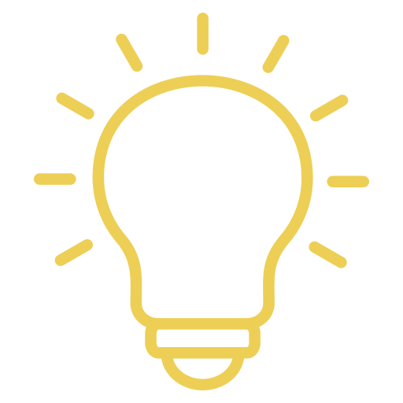

L'Idea
Il nostro progetto nasce dall'osservazione di un problema sempre più pressante: l'inquinamento delle spiagge. Abbiamo pensato di creare un robot autonomo che possa aiutare nella pulizia del litorale, concentrandoci particolarmente sui rifiuti di piccole e medie dimensioni.
